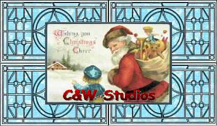
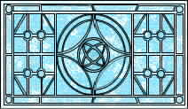
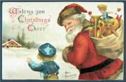

|
| ||
|
| ||
D. Wayne Ruehling
Webmaster, Clallam WebSite Services
February 1997
|
Contents Introduction Design Aspect Part I: The Style Sheet Version Initial Design and Layout Creating the Graphical Elements Document Assembly Part II: The ActiveX Version ActiveX Components Used Creating a Second Navigational Window Moving/Musical Stained Glass Windows Popup Window Controls Part III: The Straight HTML Version About the author About the contest |
to review the Christmas card. ActiveX version Style sheet version Straight HTML version (for browsers that don't support ActiveX or style sheets)  |
Note: Many links in this article point to servers that are not under the control of Microsoft Corporation. Please read our disclaimer before continuing.
While monitoring the IE-HTML mailing list, John Nicholson proposed a list-member-only competition with a Christmas/New Year holiday theme. This was soon broadened to allow any list member to include other early winter festive occasions.
The IE-HTML list moderator Steve Pruitt gave his and Microsoft's support, so the competition was on.
The idea appealed to me, as it would allow me to test some new ideas that had been kicking around, namely ActiveX and style sheets. The overall page would be an online Christmas card that presented both warm wishes in the spirit of the season and working examples of the many "bells and whistles" available.
The first order of business was to disengage the technical hemisphere of the brain and give a full throttle to the imagination. I put myself into a mindset that had to do with pure emotion, without care for the realities of the challenge of execution.
But even before the page concept, there was a contest within a contest. This was a call to design a logo for the winner of the contest. The winning logo design came from Mike Malecki (Explore Xmas '96), which only the winner of the contest is authorized to bear on his or her page. For my part, I created a logo for the rest of the participants to display on their pages, which kept in line with the Christmas theme that I had chosen for my site.
Contest winner's logo: ig-excel.gif |
Participants' logo: partici.gif |
My primary design considerations were to:
First, I had to select the background element. Because this would be the prevalent graphical element, I made the decision to tackle a problem that had been presented to the list, which was how to get a pattern to match up when used in multiple areas on a page. This was done in the style sheet version of my page.
The selection of other graphics was based on what were to me strong impressions of Christmas. These included stained glass windows, snow, holly, candy canes, Santa with his bag of gifts, ornaments, and Christmas cards.
Choosing the color scheme was fairly easy. The traditional Christmas colors of reds, yellow-golds, and greens proved to be a perfect offset to the ice blue and white snowflake background.
To create the graphics, I used Xara 1.1 for the initial artwork. Through it I was able to produce color shading and other embellishments, as well as text fitted to specific paths on the ornament-style buttons. I used Microsoft Composer to handle the drop shadows and to adjust the background transparency of the different graphics. Microsoft Notepad and the Microsoft ActiveX Control Pad were my primary authoring tools.
What started out as a single Christmas theme page ended up as three separate pages, each of which appears almost identical to the others. One was created using style sheets; a second filled with ActiveX goodies; and a third in vanilla HTML for those suffering without the benefit of Microsoft Internet Explorer 3.01. I'll describe the style sheet page first, because this is where it all began, and where most of the graphical work was performed.
My intent was to layer text and graphics in an uncommon manner to eliminate the need for monolithic graphical elements, and to show off the capabilities of positioning text and graphical elements down to the pixel. I wanted to place a graphic element in a cell that exceeded the size of other cells, and then layer this cell across two other cells. Producing this effect would be an impossible feat without the use of a style sheet.
To give the C&W Studios logo (which appears at the base of the card) the look of a graphic, I overlapped three layers of text, each in a progressively darker shade of red, slightly offset from the others. I used a similar concept for a series of horizontal rules, overlapping different colored <HR> tags to create the illusion of them being true graphics instead of simple horizontal lines.
Another challenge was to have a floating frame external to the table, but which would appear as if it were a cell within the table, matching its background to that of the main document. And for a final optical illusion, I decided to have a bisected graphic appear as a single image crossing cell boundaries.
First I had to solve the chicken-or-egg problem of how large the background tile graphic should be. The size was dependent on how large an area I needed to fill at a given resolution, so I had to determine what resolution was suitable for my audience. Many members of the list asked this question -- and while a lot were still at 640x480, they were starting to change to 800x600 or higher. By focusing on this higher resolution, I was able to make very large ornament buttons (101x101 pixels) that allowed text to be fitted to their outline.
Once these buttons were created and sized, the next step was to create a background tile of appropriate size that would flow seamlessly from the background of the document to the background of a floating frame nestled in the main graphic area and made transparent. In this case, the answer for me was 123 pixels high by 212 pixels wide, even though the floating frame was defined as 125 pixels high by 424 pixels wide and the Christmas card is 162 pixels high.
Background used: snow.gif
My dimensions for the background tile dictated the size required for the panes of stained glass. Each image was composed of a background tile under a pane of stained glass made to the dimension of 123 pixels high by 212 pixels wide. The stained glass pane was made slightly transparent, then a JPG graphic image was created. (JPG was used here to keep the graphic size down.) This graphic would make up the four middle cells of the table that was to be the window to the winter backdrop of large snowflakes.

Stained glass graphical element: stain1.jpg
I created the candy cane element in Xara 1.1, then brought it into Microsoft® Image Composer™. There, I added the drop-shadow and applied the desired level of transparency to its background. When I was satisfied with the image, I brought it back into Xara 1.1 to bisect it laterally into two equal-size elements.
Left candy cane elements: candytl1.gif and candybl1.gif
Each of these resulting elements was duplicated and horizontally mirrored to be saved as the four parts that make up the candy canes seen on the page.
Right candy cane elements: candytr1.gif and candybr1.gif
They were saved in GIF file format at a size of 62 pixels high by 90 pixels wide, since they needed to be smaller than the actual cell sizes that they would be occupying. In this way, they not only looked right on the page, but also could serve as examples to the list members when questions arose concerning table alignment and graphics.
The three ornament buttons were created in the same manner as the candy canes and saved as transparent GIFs at 101x101 pixels.
The three ornament button elements: goclallam1.gif, gojava1.gif, and gocwstud.gif
I used Xara 1.1 and Microsoft Image Composer to create and size the "Merry Christmas" and the holly graphical elements, and to make them transparent.
The Merry Christmas graphical element: mxmas1.gif
Horizontal rule graphical element: hrule.gif
Because the overall appearance was to be that of an old time window looking onto a snowy backdrop made cheery with big candy canes, I had my choice of either using additional graphical elements positioned to form window panes, or using a table. Using the table presented more of a challenge and also allowed more possibilities for solutions (not to mention taking up less bandwidth), so this is the method I chose.
For the overall look, I started off by using the style sheet titled "Typespotting - Comic Sans MS". I chose Comic Sans MS as the font for default text elements because it has a friendly appeal, and the viewing audience should have this font as it is distributed with Microsoft Internet Explorer 3.01.
To achieve the proper alignment, I set all margins in the <BODY> tag to zero, except for the TOPMARGIN, which required a -40 pixel offset.
The properties of the <BODY> tag are coded as follows:
BODY { background: url(snow.gif);
background: ivory;
margin-top: -40px;
margin-left: 0px;
margin-right: 0px;
margin-bottom: 0px }
I then coded the various paragraph text definitions:
P { color: darkred;
font-size: 18px;
font-family: Comic Sans MS }
Classes of the Paragraph definitions:
.P1 - .P9 are for variations such as font color,
and/or positioning of text and graphic elements.
Nested tables were required to give the illusion that the cell containing the Christmas card defies the rules of HTML by floating in the center of two other cells (the four stained glass panes).

The Christmas card graphical element: card2.jpg
Note: Normally there is a problem if a table is the first element after the <BODY> tag and TOPMARGIN=0 in both the <BODY> tag and the style definition. To solve this, I placed a 1x1 pixel element prior to the table. The definition for this outer table (single cell) is:
<TABLE Align=center width="100%" Height=492 border=0 cellspacing=0 cellpadding=0> <TR> <TD Colspan=5 Align=CENTER Height=492 width="100%"> <!-- for clarity this table is defined in this write-up following outer table definition --> <table.............> </table> <BR> <!-- Place the Christmas Card straddling four cells in the nested table --> <DIV Class=P6><img src="card2.jpg" height=162 border=0></DIV> <!-- Place Text based Logo for C&W Studios At base of the Christmas card --> <DIV Align=Center Class=Layer1>C&W Studios</DIV> <DIV Align=Center Class=Layer2>C&W Studios</DIV> <DIV Align=Center Class=Layer3>C&W Studios</DIV> </TD> </TR> </TABLE>The inner (nested) table definition is fairly straightforward:
<TABLE HEIGHT=492 WIDTH="100%" BORDER=1 CELLSPACING=0 CELLPADDING=0>
The main idea here was to give a large paned window effect, thus the BORDER=1. Because the contents of the table were almost entirely graphical elements, cellspacing and cellpadding were eliminated.
The inner table contains 12 cells (four rows of three cells each). To obtain the size of the cells, an additional graphic element was used in a few cells to force a specific size (heights and widths for the cells). I would normally use a single-pixel transparent GIF for this -- but because one of the driving ideas here was to use this document as a reference tool for the list, I wanted it to be visible but subdued. I used it three times: once at the top, prior to the table, as a work-around to the problem of a table following <BODY> tag with a zero TOPMARGIN; again as a 424-pixel wide by 1-pixel high graphical element in the top center cell for the alignment of the "Merry Christmas" transparent GIF; and finally in the bottom center cell spanning two rows. The graphic in this last instance is eventually overlaid by the floating frame.
At this point, the candy canes (four transparent GIFs that are 62 pixels high by 90 pixels wide) are horizontally centered in the left and right cells. All four of the top halves have their vertical alignment set to bottom, while the bottom halves have their vertical alignment set to top:
<TD ALIGN=CENTER VALIGN=BOTTOM>and
<TD ALIGN=CENTER VALIGN=TOP>
The stained glass panes are sized to fit two to a cell, and there are two rows of them. This gives us a table as follows:
| candytl1.gif | 01x1.gif xmas1.gif |
candytr1.gif |
| candybl1.gif | stain1.jpg stain1.jpg | candybr1.gif |
candytl1.gif | stain1.jpg stain1.jpg | candytr1.gif |
| candybl1.gif | 01x1.gif | candybr1.gif |
Textual representation of nested table contents
View of the nested table without style sheet-assisted overlays
After the table definitions, the floating frame is positioned so that it overlays the center cell of the last row of the table above, even though it is defined outside of the table.
Code extract for floating frame:
</TABLE> <DIV class=P9> <IFRAME src="snow0.htm" WIDTH=424 HEIGHT=150 MARGINTOP=0 MARGINLEFT=0 SCROLLING="NO" FRAMEBORDER="NO"> </IFRAME> </DIV> |
Style definition for paragraph class P9:
P9 {color: black;
margin-top: -128px;
font-size: 15px;
font-family: Comic Sans MS }
|
The floating frame is positioned so that the background of the document snow0.htm aligns with the background of the parent document. I purposely introduced a slight "wrongness" in the alignment (the floating frame extends above and below the table cells' borders) to encourage viewers to question the illusion and the techniques that produced it.
For the finishing touches, I sculpted the middle text in the shape of a Christmas ornament, by a careful adjustment of the number of letters in each line. I set the default link colors, and provided links to different areas on the document where the source can be viewed to answer questions of the IE-HTML mailing list members.
At the very end, I added <BGSOUND src="noel.mid" LOOP=5> to provide a little seasonal music.
Here are the counts for ActiveX components used on this page:
There are five major changes in this version:
ActiveX Controls used (listed in Z-order sequence):
| HotSpot2 | (For C&W Studios logo) |
| HotSpot3 | (For top left corner of Christmas card) |
| HotSpot4 | (For top right corner of Christmas card) |
| Image4 | (The C&W Studios logo transparency) |
| Image3 | (The Christmas card) |
| tllite1 | (Color transparency for top right pane) |
| tllite2 | (Color transparency for top right pane) |
| tllite3 | (Color transparency for bottom right pane) |
| tllite4 | (Color transparency for bottom left pane) |
| Image2 | (The four stained glass window panes) |
My purpose here was to display another HTML document in a secondary window, but to have the code activate only on the first MouseEnter (MouseOver) event. This control would then be disabled until the page was re-loaded or refreshed. A Microsoft® JScript™ procedure eliminates an error message that occurred after loading a new window using Visual Basic® Scripting Edition (VBScript). Its function is to allow only one activation of the second navigational window (second instance of Microsoft Internet Explorer 3.01), which contains my wife's Christmas message.
Global variables: JScript
<SCRIPT Language="Javascript">
<!--
loaded="No"
-->
</SCRIPT>
<SCRIPT Language="Javascript">
<!--
function HotSpot4_MouseEnter()
{
if (loaded=="No") {
loaded="yes";
cat=window.open("cat.htm","cat","width=500,height=300")
}
}
// -->
</SCRIPT>
The graphical element stain1.jpg was brought into Microsoft Image Composer. I duplicated it three times and made it into a larger JPG file (a four-pane window). Then four color overlays were created as transparent GIFs to match the window design.
The actual moving graphical elements
Moving the stained glass windows is accomplished by changing the top and left position of each of the color overlay image-control objects, when clicked. Also, a specific musical arrangement is played by loading its document into the 1x1 pixel floating frame.
Scripts that move the color overlays and change music selection:
Sub tllite1_Click() tllite1.Top=6 tllite1.Left=164 tllite2.Top=98 tllite2.Left=164 tllite3.Top=98 tllite3.Left=6 tllite4.Top=6 tllite4.Left=6 window.document.xmas.location.href="musica.htm" end sub |
Sub tllite2_Click() tllite1.Top=98 tllite1.Left=164 tllite2.Top=98 tllite2.Left=6 tllite3.Top=6 tllite3.Left=6 tllite4.Top=6 tllite4.Left=164 window.document.xmas.location.href="musicb.htm" end sub |
Sub tllite4_Click() tllite1.Top=6 tllite1.Left=6 tllite2.Top=6 tllite2.Left=164 tllite3.Top=98 tllite3.Left=164 tllite4.Top=98 tllite4.Left=6 window.document.xmas.location.href="musicd.htm" end sub |
Sub tllite3_Click() tllite1.Top=98 tllite1.Left=6 tllite2.Top=6 tllite2.Left=6 tllite3.Top=6 tllite3.Left=164 tllite4.Top=98 tllite4.Left=164 window.document.xmas.location.href="musicc.htm" end sub |
Can you figure out the correct sequence of panes to play each of the four other Christmas tunes?
Pop-ups have some very nice effects when properly used, since full HTML documents -- including those defined with CSS1 style sheet definitions -- can be displayed. When the scaling flag is set to true, the result is a borderless auto-sizing document that is presented to your client/visitor. When the scaling flag is set to false, a full-size view (at least as much as will fit into a non-scrolling window) is presented.
<OBJECT ID="PreVu1" width=0 height=0 TYPE="application/x-oleobject" CLASSID="CLSID:A23D7C20-CABA-11CF-A5D4-00AA00A47DD2" CODEBASE="http://www.activex.microsoft.com/controls/iexplorer/iepopwnd.ocx*Version=4,70,0,1161"> </OBJECT>
Once you define the control for a pop-up window, you must define a trigger mechanism to activate it. You have to relay to the control what HTML document you wish it to display, and you have to define the two possible methods in which to display the subordinate page. The full, qualified URL (i.e., http://www.clallam.com/index.htm) must be used, because partial URL definitions, such as "./index.htm," will not work with this control.
For both the pop-up windows and the second navigational window, I used another control called HotSpot. This is similar to a client-side image map, but a few more events are available.
I thought it prudent to issue a call to the Dismiss() procedure, whether needed or not, to ensure any other instances of a pop-up window were discarded before issuing a new one.
Sub HotSpot3_MouseEnter()
call PreVu1.Dismiss()
call PreVu1.PopUp("http://www.clallam.com/newseason/wayne.htm", false)
end sub
The C&W Studios logo
Our company logo at the bottom of the Christmas card has a HotSpot control placed over it, and this HotSpot control manages two separate events, a MouseEnter() and an onClick() event. The MouseEnter (MouseOver) event is a pop-up scaled window of the C&W Studios home page, while the onClick event is an active link to that home page.
This gave the overall appearance of what started the whole breakdown of the monolithic graphic in the plain HTML version of this page:
Initial monolithic graphic
Peace On Earth and Enjoy What Life Brings You
the Whole Year Long
D. Wayne Ruehling comes from a strong computer background, with 25 years of mainframe and micro experience in a corporate environment, and ten years of computer graphics and desktop publishing. He is currently the owner and Webmaster of Clallam WebSite Services in Sequim, Washington.
In November 1996, several members of the IE-HTML mailing list decided to have an unofficial contest to see who could produce the best site using Internet Explorer 3.0 technologies with a holiday theme. Fifty-seven members entered the contest. Members wrote up rules for the contest, donated prizes, designed logos for the contest, and voted for their favorite site. Wayne Ruehling's entry was one of the top three prize-winning sites. See John Nicholson's and George Young's articles about their prize-winning entries. See also the contests page for information on other contests held by the IE-HTML mailing list members.
Did you find this material useful? Gripes? Compliments? Suggestions for other articles? Write us!
© 1999 Microsoft Corporation. All rights reserved. Terms of use.